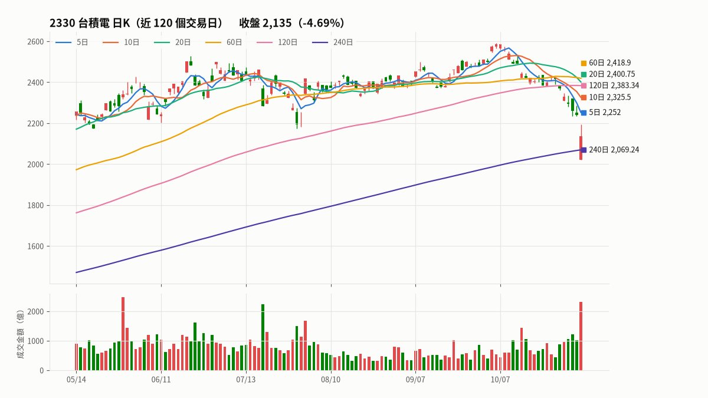
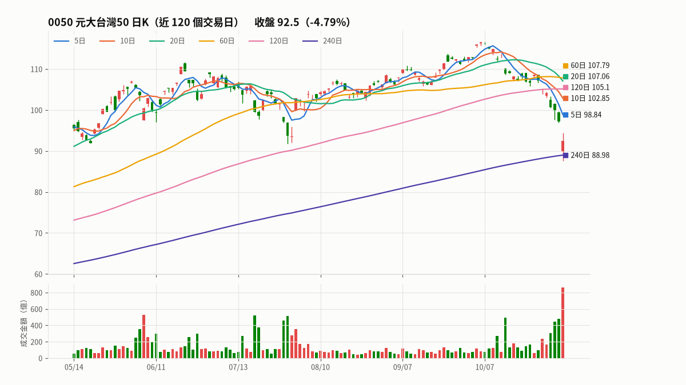
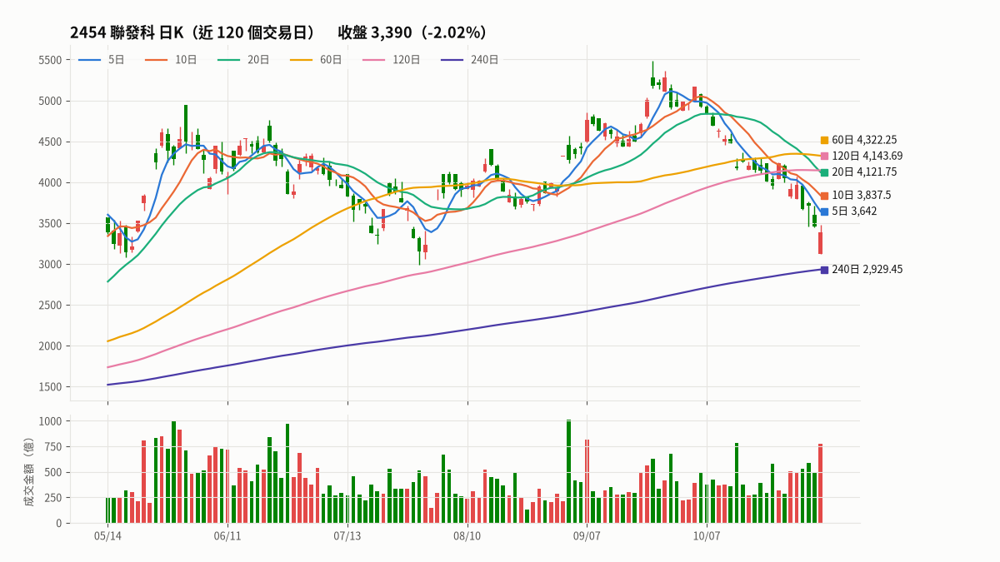
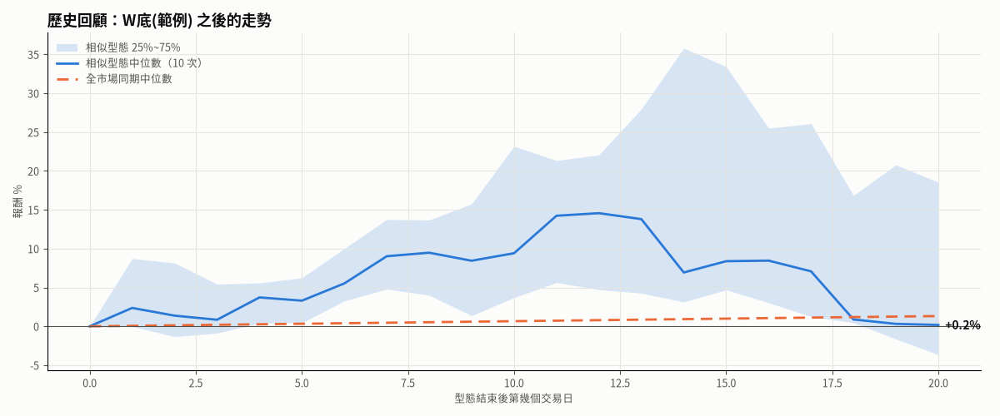

👀 個股追蹤 2026-11-06（五）
💤 今天（11/07）休市，以下是最近一個交易日的資料
| 代號 | 名稱 | 收盤 | 漲跌 | 量（倍） | 近20日 | 均線位置 | 支撐壓力 | 法人（張） | 符合 |
|---|---|---|---|---|---|---|---|---|---|
| 2330 | 台積電 | 2,135 | -4.69% | 3.3 | -17.4% | 在 240 日線之上，5、10、20、60、120 日線之下 | 到關鍵支撐：盤中回測 240日線（年線） 2,069.24，收盤守住 | -9,473 | 外資連續賣超 |
| 0050 | 元大台灣50 | 92.5 | -4.79% | 5.2 | -20.6% | 在 240 日線之上，5、10、20、60、120 日線之下 | 到關鍵支撐：盤中回測 240日線（年線） 88.98，收盤守住 | -537,978 | 外資連續賣超 |
| 2454 | 聯發科 | 3,390 | -2.02% | 2.3 | -31.1% | 在 240 日線之上，5、10、20、60、120 日線之下 | 還沒到支撐：最近的支撐是 240日線（年線） 2,929.45（距離 15.7%） | -3,181 | 外資連續賣超 |
2330 台積電 2,135 ▼105（-4.69%）

日K：長紅K、跳空下跌（缺口 2,195～2,235）、開低走高（開 2,020｜高 2,195｜低 2,020｜收 2,135）
量能：成交 110,715 張（2,318.9 億），是 20 日均量的 3.3 倍（量增）
漲跌：近5日 -9.9%｜近20日 -17.4%｜近60日 -9.7%｜距 60 日高點 -17.4%
法人：外資 -22,844｜投信 +4,669｜自營商 +8,702｜合計 -9,473 張（外資連賣 21 天、法人 5 日 -39,748 張）（11/06）
融資融券：融資 35,072（+476，使用率 0.5%）｜融券 75（+28）｜券資比 0.2%（11/06）
大戶：400 張以上大股東 87.0%，週增減 -0.14（11/06）
符合：外資連續賣超
📅 11/16（一） 法說會（09:00）
📢 公告（公開資訊觀測站重大訊息，1 則）
- 11/06 18:05：本公司受邀參加機構投資人說明會（第12款）
符合條款第四條第XX款：12
事實發生日：115/11/16
1.召開法人說明會之日期：115/11/16 ~ 115/11/17
2.召開法人說明會之時間：09 時 00 分
3.召開法人說明會之地點：Grand Hyatt Hong Kong
4.法人說明會擇要訊息：本公司受邀參加摩根大通證券所舉辦之『APAC Technology, Innovation and Growth (TIG) Conference』，會中就本公司10/15法說會已公開之財務數字、經營績效等相關資訊進行說明。
5.其他應敘明事項：無。
完整財務業務資訊請至公開資訊觀測站之法人說明會一覽表或法說會項目下查閱。
均線：在 240 日線之上，5、10、20、60、120 日線之下｜均線交錯
- 到關鍵支撐：盤中回測 240日線（年線） 2,069.24，收盤守住
- 上方壓力：5日線（週線） 2,252（距離 5.2%）
| 均線 | 數值 | 收盤距離 | 方向 | 今天 |
|---|---|---|---|---|
| 5日線（週線） | 2,252 | -5.20% | ↘ 下彎 | 在下方（壓力） |
| 10日線（雙週線） | 2,325.5 | -8.19% | ↘ 下彎 | 在下方（壓力） |
| 20日線（月線） | 2,400.75 | -11.07% | ↘ 下彎 | 在下方（壓力） |
| 60日線（季線） | 2,418.9 | -11.74% | ↘ 下彎 | 在下方（壓力） |
| 120日線（半年線） | 2,383.34 | -10.42% | ↘ 下彎 | 在下方（壓力） |
| 240日線（年線） | 2,069.24 | +3.18% | ↗ 上揚 | 回測有撐（支撐） |
0050 元大台灣50 92.5 ▼4.65（-4.79%）

日K：長紅K、跳空下跌（缺口 94.45～96.9）、開低走高（開 89.95｜高 94.45｜低 87.55｜收 92.5）
量能：成交 943,225 張（859.0 億），是 20 日均量的 5.2 倍（量增）
漲跌：近5日 -11.9%｜近20日 -20.6%｜近60日 -10.1%｜距 60 日高點 -20.6%
法人：外資 -88,714｜投信 +8,361｜自營商 -457,625｜合計 -537,978 張（外資連賣 21 天、法人 5 日 -1,482,438 張）（11/06）
融資融券：融資 48,200（+10,673，使用率 0.8%）｜融券 287（-17）｜券資比 0.6%（11/06）
大戶：400 張以上大股東 23.0%，週增減 -1.72（11/06）
符合：外資連續賣超
均線：在 240 日線之上，5、10、20、60、120 日線之下｜均線交錯
- 到關鍵支撐：盤中回測 240日線（年線） 88.98，收盤守住
- 上方壓力：5日線（週線） 98.84（距離 6.4%）
| 均線 | 數值 | 收盤距離 | 方向 | 今天 |
|---|---|---|---|---|
| 5日線（週線） | 98.84 | -6.41% | ↘ 下彎 | 在下方（壓力） |
| 10日線（雙週線） | 102.85 | -10.07% | ↘ 下彎 | 在下方（壓力） |
| 20日線（月線） | 107.06 | -13.60% | ↘ 下彎 | 在下方（壓力） |
| 60日線（季線） | 107.79 | -14.19% | ↘ 下彎 | 在下方（壓力） |
| 120日線（半年線） | 105.1 | -11.99% | ↘ 下彎 | 在下方（壓力） |
| 240日線（年線） | 88.98 | +3.96% | ↗ 上揚 | 回測有撐（支撐） |
2454 聯發科 3,390 ▼70（-2.02%）

日K：長紅K、開低走高（開 3,115｜高 3,480｜低 3,115｜收 3,390）
量能：成交 23,481 張（769.7 億），是 20 日均量的 2.3 倍（量增）
漲跌：近5日 -13.4%｜近20日 -31.1%｜近60日 -13.1%｜距 60 日高點 -35.9%
法人：外資 -4,536｜投信 +556｜自營商 +798｜合計 -3,181 張（外資連賣 21 天、法人 5 日 -13,574 張）（11/06）
融資融券：融資 11,637（-254，使用率 2.9%）｜融券 39（-12）｜券資比 0.3%（11/06）
大戶：400 張以上大股東 71.5%，週增減 -0.65（11/06）
符合：外資連續賣超
均線：在 240 日線之上，5、10、20、60、120 日線之下｜均線交錯
- 還沒到支撐：最近的支撐是 240日線（年線） 2,929.45（距離 15.7%）
- 上方壓力：5日線（週線） 3,642（距離 6.9%）
| 均線 | 數值 | 收盤距離 | 方向 | 今天 |
|---|---|---|---|---|
| 5日線（週線） | 3,642 | -6.92% | ↘ 下彎 | 在下方（壓力） |
| 10日線（雙週線） | 3,837.5 | -11.66% | ↘ 下彎 | 在下方（壓力） |
| 20日線（月線） | 4,121.75 | -17.75% | ↘ 下彎 | 在下方（壓力） |
| 60日線（季線） | 4,322.25 | -21.57% | ↘ 下彎 | 在下方（壓力） |
| 120日線（半年線） | 4,143.69 | -18.19% | ↘ 下彎 | 在下方（壓力） |
| 240日線（年線） | 2,929.45 | +15.72% | ↗ 上揚 | 在上方（支撐） |
🔍 型態掃描
W底(範例)（40 天）
目前沒有相似度 ≥85% 的股票
歷史相似型態 10 次，樣本少：5天 平均+3.8%／上漲80%、10天 平均+12.9%／上漲80%、20天 平均+8.0%／上漲50%｜全市場同期 20天 平均+5.1%／上漲55%
說明
- 均線、支撐壓力的判斷和盤勢解析相同（config「盤勢解析」的均線與門檻）；均線和漲跌用還原股價，收盤價是實際價格。
- 量能：今天成交量和前 20 日均量比較，1.5 倍以上是量增、0.7 倍以下是量縮。
- 融資融券每天晚上 9:30 才公布，傍晚的報告是前一個交易日的；大戶是集保每週五更新的 400 張以上大股東比例。
- 「符合」是 config「選股」裡今天成立的條件組（含 K 線型態）。
※ 依固定規則整理的盤後資料，僅供參考，不構成投資建議
